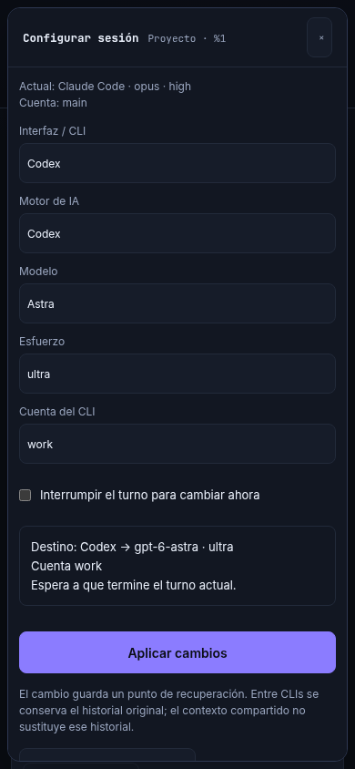
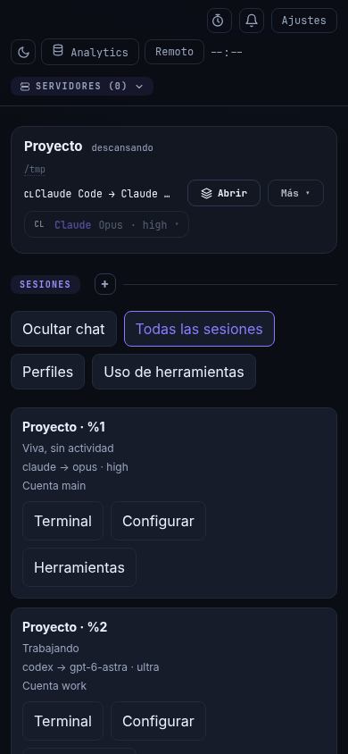
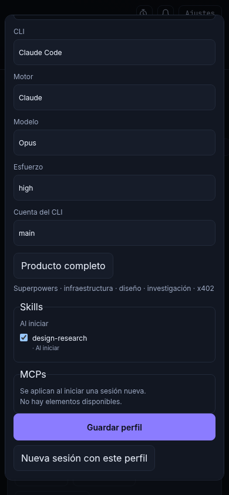
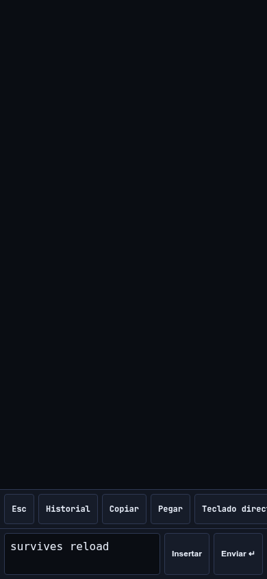
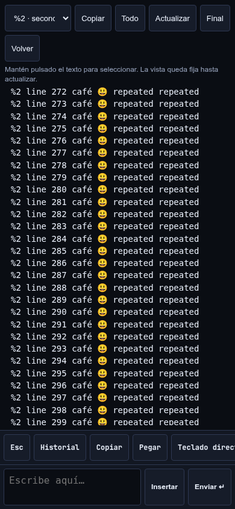
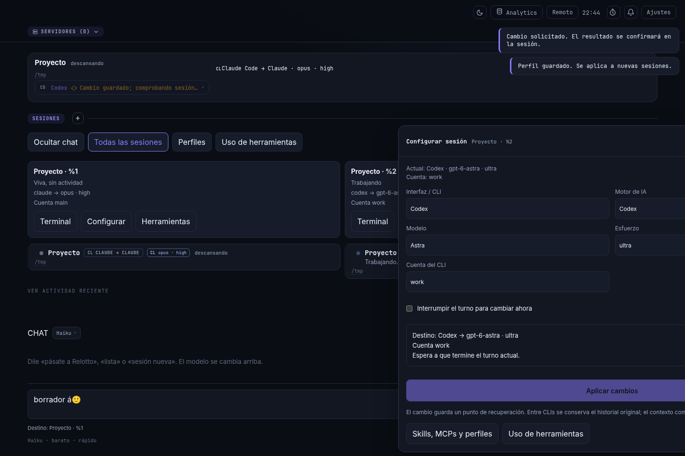
Capturas de Chrome sin interfaz gráfica con datos y conexiones simulados. Fuentes y alcance.






Prototipo con contenido ficticio. Capturas de Chrome remoto en la Mac mini, transferidas a este equipo. Comparar las cinco propuestas.
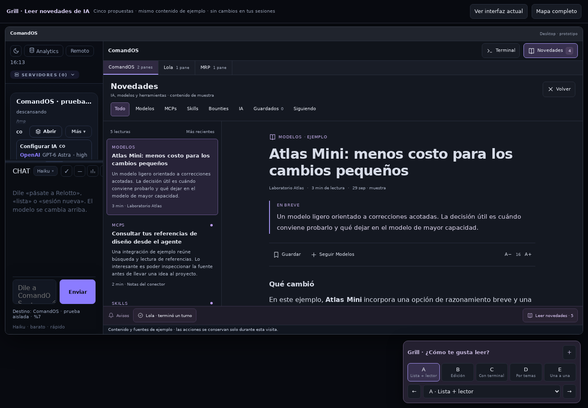
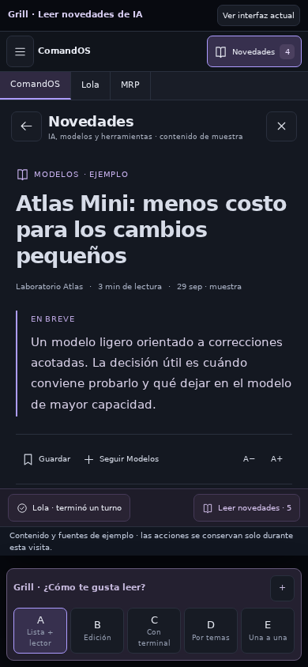
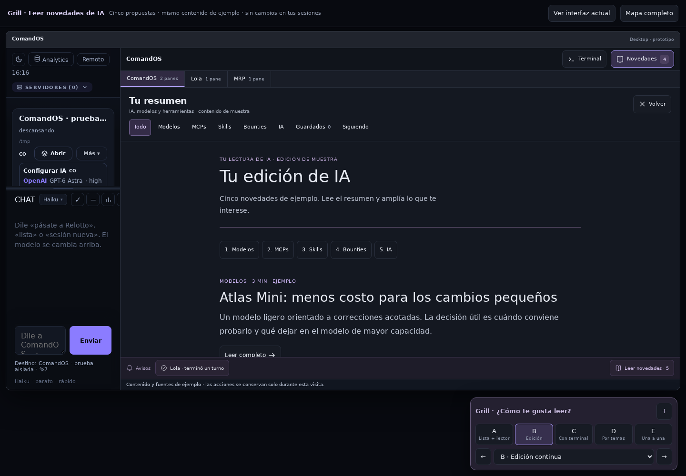
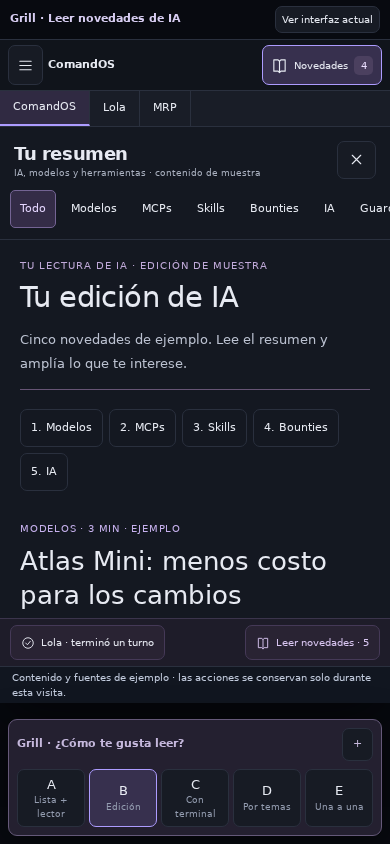
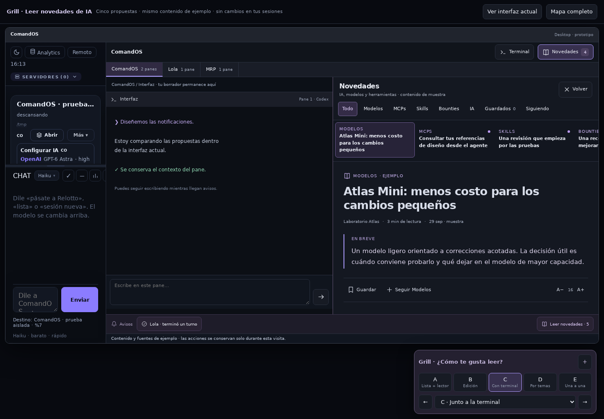
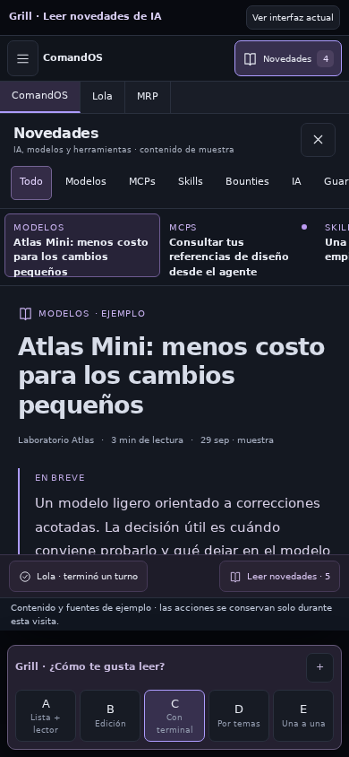
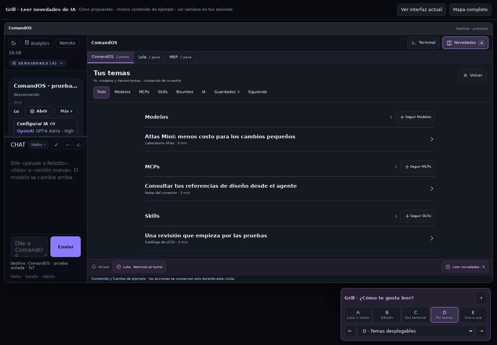
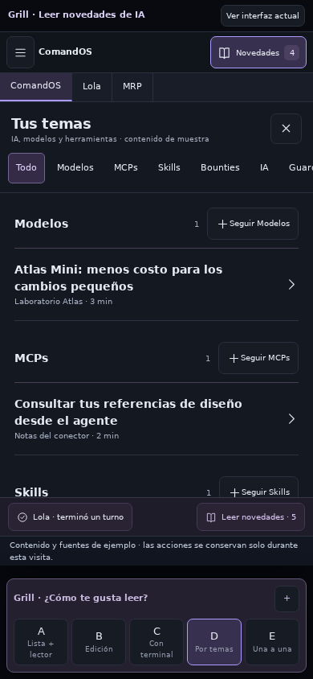
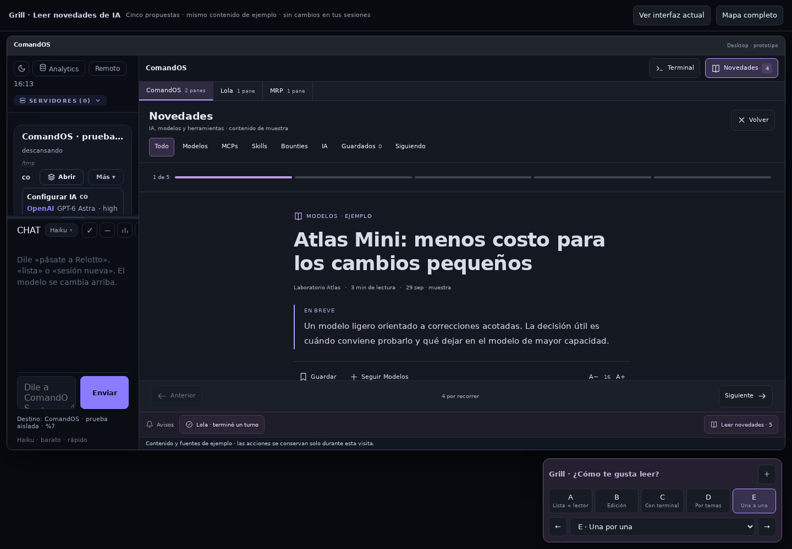
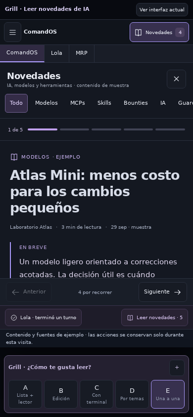
Prototipo: mostrar, ocultar, ampliar y ajustar el espacio. Abrir edición con terminal.
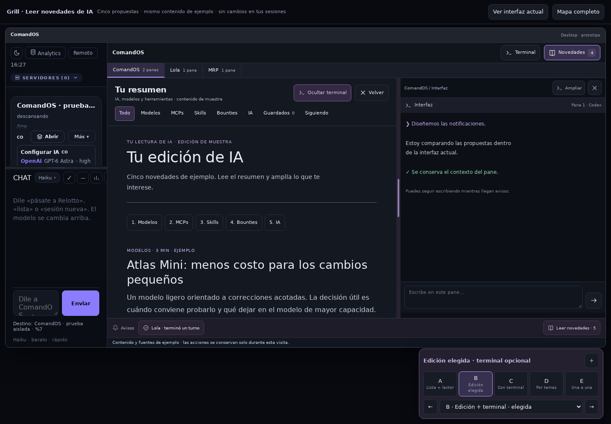
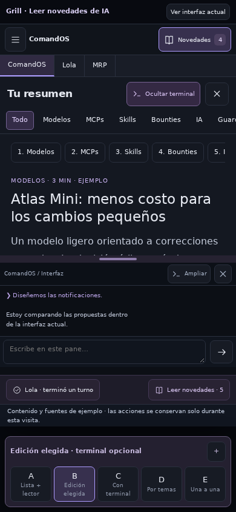